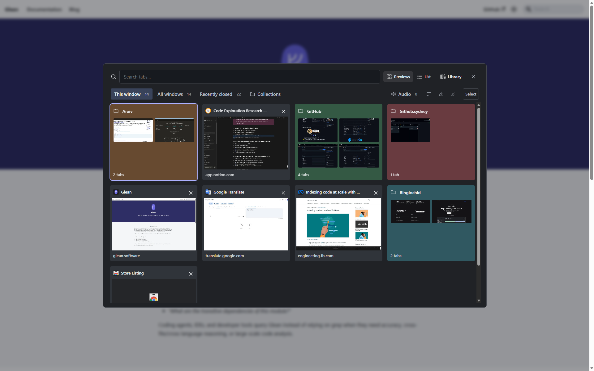

Save your work
Save tabs into collections with groups and notes. Keep different projects in separate spaces.
Save tabs into collections, switch between projects, and find the page you need.

Save tabs into collections with groups and notes. Keep different projects in separate spaces.
Open a saved collection or switch your window to it. Auto-update can keep the collection in step with your tabs.
Search open tabs and saved links, or use the visual switcher to recognise a page by its preview.
Connect an AI provider to group links by topic and name or summarise collections.
Optional. Uses titles, URLs and relevant notes, not screenshots or page text. Requires an API key; provider charges may apply.
AI setup →Send a collection or your entire library to Notion, including links, groups and notes.
Optional. Requires a Notion connection. Exports are snapshots; later changes do not sync.
Notion setup →Open the visual switcher
Go straight to your library
Search without distractions
Change these defaults in your browser's extension shortcuts. See all shortcuts →

Your library stays in your browser profile. LeoTabs has no advertising or telemetry.
AI and Notion send data directly to the services you configure.
Privacy policy →Yes. LeoTabs is free to use. Optional AI providers may charge for API usage.
No. Saving, switching, search, notes, file export and website grouping work without an AI connection.
Yes. Download backup JSON, bookmark HTML or Markdown. Back up before uninstalling or changing installations: local data is tied to the extension's identity in your browser. Read the backup guide.
Undo and Recovery help restore saved work after supported actions. They cannot reverse a provider request or delete an exported Notion page. See what can be recovered.